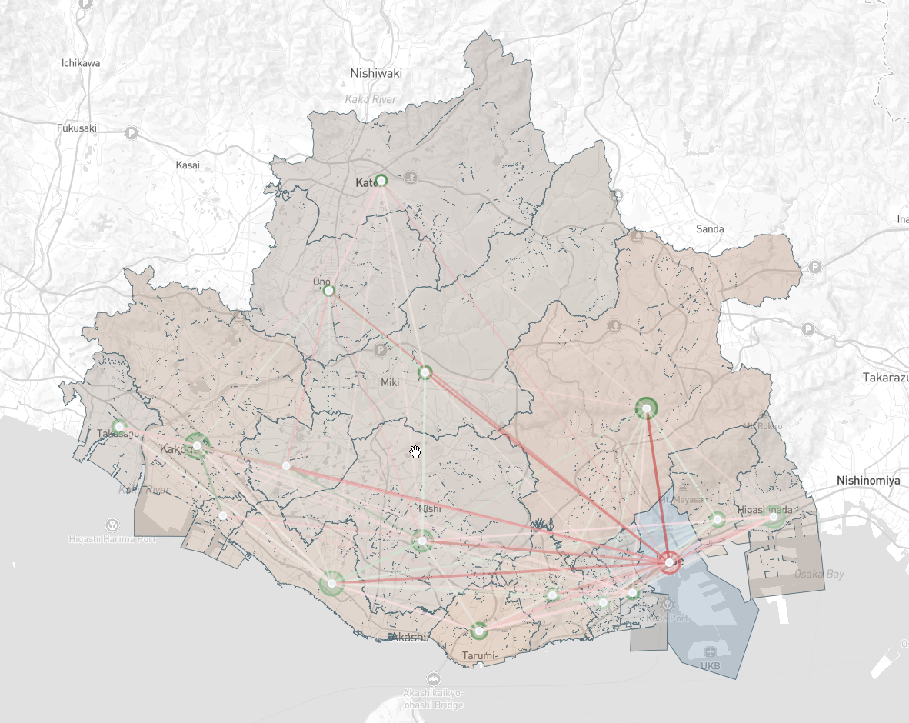

Summary
Each map is limited to the metropolitan area (都市圏) around one or more major Japanese cities. Metropolitan area bounds are taken from the 2015 (csis.u-tokyo.ac.jp) 大都市雇用圏 dataset, with updates to ensure present-day administrative borders are honored
Features
- High level of detail, with sub-250m population placements in dense areas.
- Spatial realism -- points are assigned in a manner that is aware of water features and mesh-weighted
- Special demand from several sources is also modeled
- Airports (based on annual passenger statistics, split by international and domestic travellers)
- Ports (based on annual passenger statistics)
- Hospitals (based on reported bed capacity)
- Students in primary education (小学校・中学校) (clipped to school districts)
- Students in secondary education (高等学校) (sized by overall municipal enrollment)
- Students in post-secondary (大学・短期大学) (sized by real enrollment figures)
- OSRM routing included
- Building depth is default to -10m, with train-related infrastructure exempt
High-Level Methodology
Resident + Commuter totals are approximated using employed persons / workers (就業者数・従業者数) counts per (小地域) augmented by 500m (labor) and 250/100m (resident + approximate population) meshes to achieve sub-小地域 level point placement. Population counts by 小地域 are conserved, and point balancing is done through a mesh (population/worker) aware loss function
Gravity model is augmented by known O/D commute patterns by designated city ward (区) or municipality (市町村) to realistically simulate macro-level commute data in the absence of true O/D pairs
Primary Data Sources
- 令和2年国勢調査 (e-stat.go.jp)
- 令和3年経済センサス (e-stat.go.jp)
- 国土数値情報 (nlftp.mlit.go.jp)
- 大学ポートレート(shigaku.go.jp + niad.ac.jp)
- 学校基本調査 (mext.go.jp)
Issues/Questions
Please raise an issue on this repository or reach out to me directly on the pack's dedicated thread for any issues. Suggestions are greatly appreciated and I will do my best to accommodate requests (so long as they are reasonable).
Changelog
0.3.0 (2026-03-22)
New Cities
ITM- 大阪 / ŌsakaOKJ- 岡山 / Okayama
New Features
- Added demand for ~110 universities/technical colleges with no matching enrollment data (totalling ~140k students)
- Added demand for ~70 aquariums / zoos / botanical gardens
Other Updates
- Rebalanced overall population to be logarithmic mean of (employed persons / workers) for consistency
- Most cities should see a ~5-10% increase in total population as a result
- Rebalanced min/max demand totals for individual points based on overall metropolitan area size
- Smaller, less dense metropolitan areas (e.g. 山形・函館・高知) will see greater point density as a result
- Larger, already dense metropolitan areas (e.g. 神戸・福岡) should see very little change
- Point seeding algorithm now takes into account 100m mesh population estimates to avoid placing resident point in areas with no buildings
- Most apparent in highly rural areas of the map
- Added final point/displacement/agglomeration algorithm to reduce very dense point spacing in urban centers
Bugfixes
- Removed fixed-order origin point assignment in O/D calculation assignment causing significant "skew" in municipality origins for large destination points
- This fix also signifcantly reduces the share of municipal O/D misalignment going to the smallest municipalities

0.2.0 (2026-03-15)
New Cities
HKD- 函館 / HakodateIZO- 中海 / Nakaumi (出雲 (Izumo)・松江 (Matsue)・米子 (Yonago))NGS- 長崎 / NagasakiTAK- 高松 / TakamatsuTOY- 富山 / Toyama
New Features
- Added demand from ports / hospitals
- Rebalancing patch across all existing special demand types
- Airports / Universities / High Schools get significant haircuts on overall demand
- Added padding around boundary so that there is a larger buffer between coastline and black tiles
Bugfixes
- Fixed elementary/middle school demand being based (inadvertently) off of municipal class count fallback
- Demand now relies on much more accurate estimate based off of 15歳未満 (under-15) totals per municipality
- Fixed the map for 神戸 (Kobe) missing building depth
0.1.3 (2026-03-09)
New Cities
KCZ- 高知 / KōchiKIJ- 新潟 / NiigataKKJ- 北九州 / KitakyūshūOKA- 沖縄 / OkinawaUKY- 京都 / Kyōto
New Features
- Added neighborhood/city labels.
0.1.2 (2026-03-08)
New Features
- Added special demand from primary/secondary age students commuting to school.
0.1.1 (2026-03-07)
Initial Cities
FUK- 福岡 / FukuokaGAJ- 山形 / YamagataHIJ- 広島 / HiroshimaKOJ- 鹿児島 / KagoshimaMYJ- 松山 / MatsuyamaSDJ- 仙台 / SendaiSPK- 札幌 / SapporoUKB- 神戸 / Kōbe
Known Issues
- 鹿児島 (Kagoshima) has park data encoded within the ocean due to the national park surrounding 桜島 (Sakurajima).
- 広島 (Hiroshima) has an improbably tall building -- OSM error
- 富山 (Toyama) has a very isolated point deep in the mountains -- algorithm quirk
Planned Updates
- Post-processing of large buildings files to enable (hopefully) larger maps (esp. Nagoya)
- Better building foundation depth estimation (based on OSM building size)
- Reconciliation of 小地域 (small boundary area) job counts vs. 500m job mesh to reduce outliers (e.g. high concentration of workers near a certain set of rice fields)
- Add demand for other cultural institutions (UNESCO world heritage sites / museums / libraries)
- Add demand for event venues (particularly stadiums & arenas)